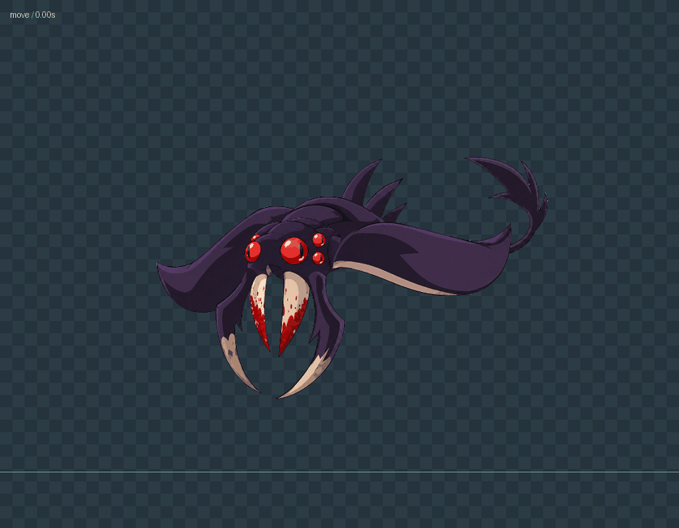
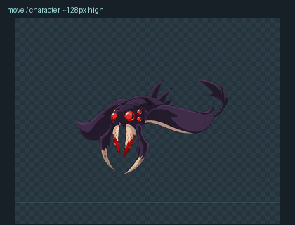
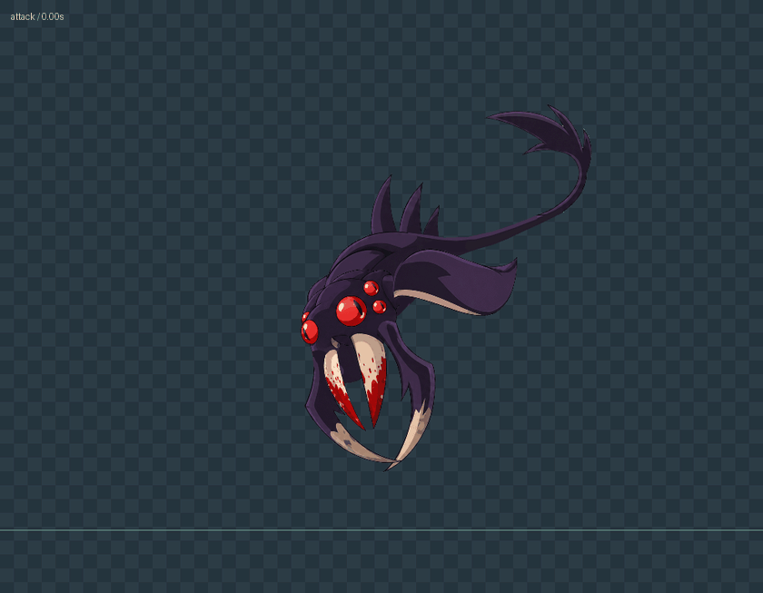
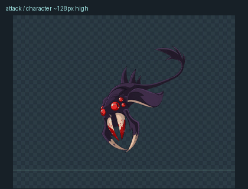
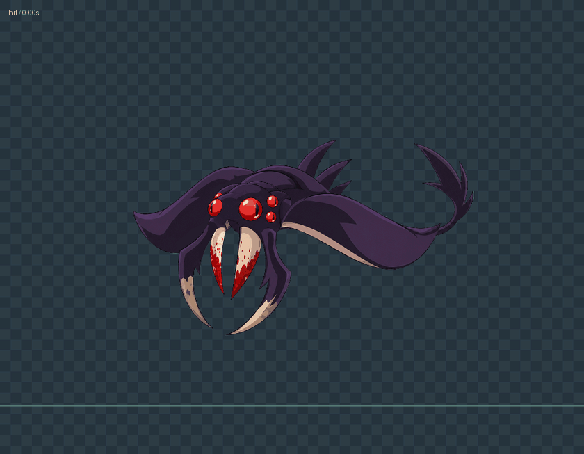
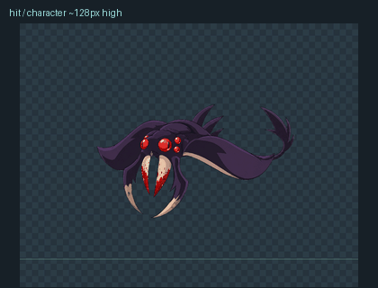
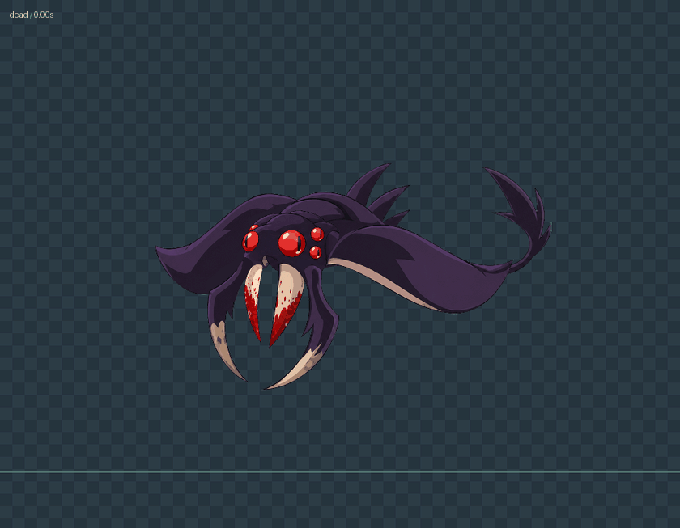
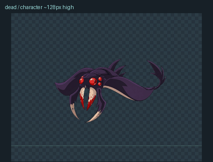

112 · 双翼飞行与原地俯冲悬空待机 / stand手机尺寸 / 飞行姿态角色约 128px 高
原地振翅移动 / move
手机尺寸 / 飞行姿态角色约 128px 高
持续原地俯冲 / attack
手机尺寸 / 飞行姿态角色约 128px 高
受击回弹 / hit
手机尺寸 / 飞行姿态角色约 128px 高
收翼落地 / dead
手机尺寸 / 飞行姿态角色约 128px 高